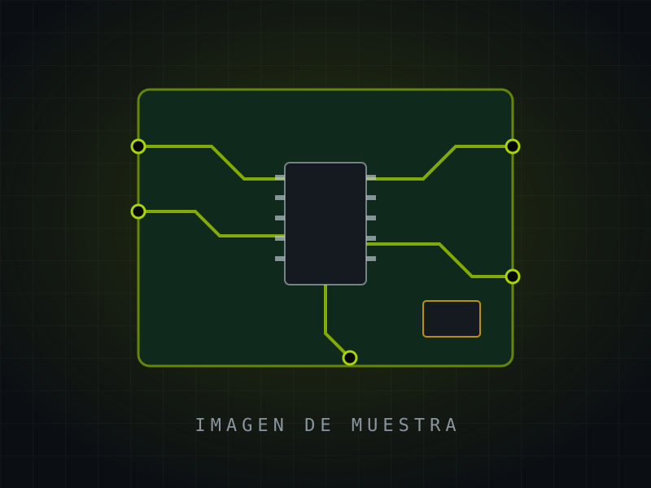

A1Subir
fade up · up
01
Aparece subiendo
Sube unos centímetros mientras se enfoca y aparece.
Bueno para: subtítulos, llamadas
Todo lo que puede aparecer en una diapositiva, con un código corto para nombrarlo en el chat. Cada ficha es la pieza real, no una imagen: pulsa Repetir para volver a ver su animación.
3, la tarjeta de la derecha que entre con A5 en vez de A8.»5, que las cuatro celdas C5 salgan M3 (a la vez) y más lentas.»D2 de la portada.» · «Prueba X3 en el título de la 1.»Cómo aparece una pieza. Cualquier componente puede entrar con cualquiera de estas.
Una línea de apoyo
1.200
No son piezas: cambian cuándo y cómo ocurre una animación.
Las piezas con las que se construye cada diapositiva. Casi todas usan el panel C1 como base.
Una línea de apoyo breve
85 %
explicación corta
1.500 €
Un párrafo corto que explica la tarjeta

Detalles que decoran o que se mueven en bucle mientras la diapositiva está en pantalla.
75 %
La paleta de Inmaker. El orden lima → ámbar → plata → acero marca la numeración 01, 02, 03 y 04.
Tres familias, cada una con un papel fijo.
Cómo se pasa de una diapositiva a la siguiente. Las da Reveal.js. Se puede elegir una para toda la presentación o una distinta en cada diapositiva.
Efectos disponibles que todavía no se han usado en ninguna presentación, con su demostración. Se piden por su código igual que el resto.
75 %
la cifra sorpresa